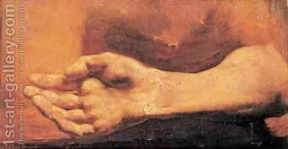

Menachot 73 - Kometz, a Handful
To take a kometz, or a handful, the kohen bends his three middle fingers against his palm, pushes his hand downward into the pieces of the flour offering, and then turns his hand upward. The portion scooped up in the Kohen's hand is a kometz, or handful, and what remains is remnants that are eaten by the kohanim.
The following flour offerings are subject to taking off a handful: a fine-flour offering (where the handful is taken when it is dough), the deep pan and flat pan offerings (where the handful is taken off from the baked pieces, or according to some, from the fine meal made out of them), the oven-baked offering, the offering of an idolater, Omer, the offering of a sinner, and the offering of jealousies.
Chizkiyah taught a rule: if a law has no application in its context, use it in another context. For example, the Torah said " Every flour offering... will be for the sons of Aharon ." Since we already know this from " this is the law of the flour offering ," this teaches instead other laws: that a kohen cannot exchange his portion of the flour offering for a meat or bird offering.
Art: Theodore Gericault - Study Of A Hand And Arm